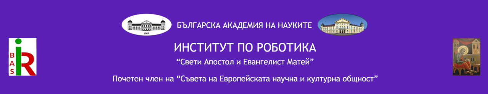

Изследване на AI-базирани методи за моделиране, анализ и прогнозиране на биомедицински времеви серии чрез прилагане на концепция за дигитален близнак


В тази секция ще бъдат публикувани наборите от данни, събрани и генерирани в рамките на проекта — реални и синтетични кардиологични записи, както и придружаващата ги документация. Раздeлът се обновява текущо в хода на изследването.
Записи на сърдечна вариабилност от изследвания в проекта, събрани при спазване на етичните регулации и защита на данните на доброволците.
Очаква се Все още не е наличноГенерирани синтетични набори от данни с висока физиологична достоверност за обучение и валидация на AI алгоритми.
Очаква се Все още не е наличноДокументация за структурата на данните, методологията на събиране и правилата за анотиране.
Очаква се Все още не е налично